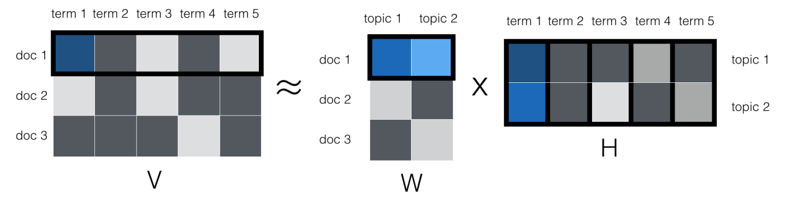
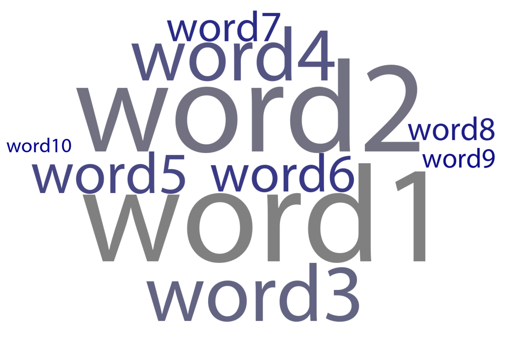

| text | topic1 | topic2 | topic3 |
|---|---|---|---|
| Document 1 | 0.5 | 0.2 | 0.3 |
| Document 2 | 0.2 | 0.3 | 0.2 |
| Document 3 | 0.3 | 0.5 | 0.5 |
Ben’s NLP tools
What is NLP?
Natural language processing is simply analyzing text data. This can be as simple as counting words, or as complex as generating text. This is a short tutorial on some tools I’ve built to help analyze text data.
What kinds of things can you do with NLP?
All kinds of things, but we’ll focus on three things:
- De-identifying text. This is important for protecting the privacy of your participants. You can use NLP to remove names, places, institutions, etc. from text data.
- Classifying text. This is important for understanding what people are talking about. You can use NLP to classify text into different categories.
- Clustering text. You can use NLP to group text into different categories.
Some basic concepts
Lingo
A corpus is a collection of pieces of text, which are usually referred to as documents. Each corpus or model has an associated vocabulary which is the set of all possible words that the model can understand or that occur in that topic.
A document term matrix is a matrix that represents a corpus. It has as many rows as documents there are in the corpus, and as many columns as there are words in the vocabulary. Each cell in the matrix represents the number of times that word appears in that document. For example, if the word “the” appears 5 times in the first document, then the first row, first column cell would be 5.
Usually, cells represent counts, but they can also represent other things, like TF-IDF scores, or binary scores.
Text is not normally distributed
Word frequency distributions follow Zipf distributions, meaning that the most common words are very common, and all the other words basically never happen. This means that the second most common word in a language will appear approximately half as often as the most common word. The third most common word will appear about a third as often, and so forth.
I have spent hours trying to debug some code that wasn’t printing words on a word cloud, only to realize that the words were there, but they were so small that they were invisible.
Tokenization
Tokenization is the process of splitting text into whatever the unit of analysis will be, often words or parts of words, but could also be sentences, or paragraphs.
Pre-processing: Stop words, Stemming, Lemmatization
Because of the way text is distributed, we often want to remove the most common words, called stop words. We also often want to reduce words to their root form, called stemming or lemmatization. For example, “running” and “ran” would both be reduced to “run”. Stemming simply chops words, Lemmaization uses a dictionary to reduce words to their root form.
Vectorization: Bag of Words, TF-IDF
Vectorization is the process of turning text into numbers. The simplest way to do this is to count the number of times each word appears in a document. This is called a bag of words. A more sophisticated way to do this is to count the number of times each word appears in a document, but then divide that by the number of documents that word appears in. This is called TF-IDF. The formula is below.
\[ \text{TF-IDF} = \text{TF} \times \text{IDF} \]
\[ TF = \frac{\text{Number of times word appears in document}}{\text{Total number of words in document}} \]
\[ IDF = \log{\frac{\text{Total number of documents}}{\text{Number of documents that word appears in}}} \]
Some methods
Dictionary Methods
Dictionary methods simply count words. For example a dictionary for happiness could be [like, love, great, awesome,...]. Then you would count the number of times each word in the dictionary appears in a document. Documents that have a higher count of words in the dictionary are assumed to be more happy.
LIWC
Linguistic Inquiry and Word Count is software that has a lot pre-validated dictionaries. It is a GUI application that costs around 120 USD. If you have it installed, you can call it from within python with the following function. It will return a dataframe with the LIWC scores for each document.
process_dataframe_with_liwc(
df: pd.DataFrame,
id_column:str,
text_column: str,
save_to_csv: bool = False,
output_filename: str = 'liwc_output.csv'
) -> pd.DataFrame:Custom dictionaries
You can build your own dictionaries. You probably will need to validate them. I have a function that will do this for you. It will return a dataframe with the dictionary scores for each document.
>>> data = pd.DataFrame({"text": ["I love apples and oranges.", "Bananas are great."]})
>>> dictionary = [r"apple", r"orange", r"banana"]
>>> print(count_dictionary_matches(data, "text", "count", dictionary))
text results
0 I love apples and oranges. 2
1 Bananas are great. 0
>>> print(count_dictionary_matches(data, "text", "proportion", dictionary))
text results
0 I love apples and oranges. 0.4
1 Bananas are great. 0.0Using Named Entity Recognition to sanitize text
Entities refer to special kinds of words or phrases like names, places, instituions, numbers, etc. that can be identified by a model. For example, the sentence “I live in New York” contains the entity “New York” which can be identified by a model.
You can train your own NER mode, to detect any kind of entity, but we won’t go into this now. Instead, we will use a pre-trained model from the spaCy library to deidentify text.
What counts as deidentified? My advice—ask the IRB. The lowest bar is removing any two word names (e.g., “John Smith”, but “John” would not be removed). Higher bars may require eliminating all names, places and institutions.
replace_ner("My name is Benjamin Lira", level = 1)
# "My name is [NAME]"We can do this to a dataframe.
deidentify_dataframe(df, input_text_column = "some text column", output_text_column = "redacted", id_column=None, level=1, save=False, output_filename="deidentified_data.csv"):
some text id redacted
0 this is some text about Benjamin Lira 1 this is some text about [PERSON]
1 this is some more text 2 this is some more textTopic Modeling
You can think of topic modeling as factor analysis for documents. Based on the patterns of word co-occurrences, the model will identify topics. Each topic is a set of words that tend to co-occur. Each document is a mixture of topics. For example, a document about politics might be 50% politics, 30% sports, 20% entertainment. Each word in the document is assumed to be generated by one of the topics. For example, the word “election” might be generated by the politics topic, but the word “ball” might be generated by the sports topic.
Note that you cannot choose a priori what the topics should be (just like in exploratory factor analysis). Like in factor analysis you have to choose how many topics to extract, and once you get them, you have to interpret them.
You can also think of topic modeling as matrix factorization. You start with a Document-Term Matrix which is \(n\times v\). \(n\) is the number of documents, and \(v\) is the size of the vocabulary. You then factorize this matrix into two matrices, \(n\times k\) and \(k\times v\). \(k\) is the number of topics. The first matrix represents the topic proportions for each document, and the second matrix represents the word proportions for each topic.

Latent Dirichlet Allocation (LDA), Correlated Topic Modeling, and Structural Topic Modeling are all ways of doing this. I usually do this on R. See attached R script for an example, based on AJ Alvero’s paper and see this paper for a comparison of the different methods.
The topics can be interpreted with the LDAvis package. See below for an example.
The output is a dataframe with the topic proportions for each document. It may look something like the following. Note that topic modeling is soft-clustering: Each document is a mixture of topics, so each document will have some proportion of each topic. The sum of all topics adds to one.
GPT-coding
I have created a function that will take care of this for you. See example usage below:
openai.api_key = "YOUR_OPENAI_API_KEY"
data = pd.read_csv("data.csv")
custom_prompt = """
I will show you a comment a participant in a scientific study gave to a vignette in which the following happens.
Tom tells Jeff that his car broke down in a rural place.
Jeff tells Tom that he read a meta-analysis that shows that people who live in rural places are more likely to helpful.
The participant wrote a comment about this vignette, about what Jeff is doing.
Please respond with a 1 if the participant believes that Jeff is providing an explanation for why Tom's car broke down.
Respond with a 0 if the participant does not believe that Jeff is providing an explanation for why Tom's car broke down.
Your response should be formatted as a python dictionary, with spaces for the rating and an explanation for it.
"""
ratings_df = generate_ratings(data, "id", "comments", custom_prompt, "data/ratings_binary", verbose=True)
ratings_df.to_csv("ratings_binary.csv", index=False)This will produce a dataset like the one shown below.
| id | gpt_explanation | gpt_rating | participant_comments |
|---|---|---|---|
| 50 | The participant's comment does not indicate any belief that Jeff is providing an explanation for why Tom's car broke down. Rather, they are analyzing the relevance and validity of Jeff's response about the meta-analysis study on rural living. | 0 | because it's a personal anecdote, the study could not draw that specific conclusion |
| 84 | The participant does not refer to Jeff's action of providing an explanation for why Tom's car broke down. They instead discuss the apparent relationship between community size and observation in the situation, and the influence of people's personality. | 0 | in smaller area, it's easier to observe anything happen in the community but the people's personality has a big role |
| 79 | The participant's comment does not suggest that they believe Jeff is providing an explanation for why Tom's car broke down. Their comment is more focused on the reliability and applicability of Jeff's study in explaining why people stopped to help Tom, rather than providing a reason for the car breakdown. | 0 | It showed that the research was wrong & didn't explain why the people did stop to help Tom. |
| 62 | The participant comments suggest that they think Jeff provided some insight about what Tom experienced. However, this is not directly an explanation for why Tom's car broke down but rather about the behavior of people in rural areas. Therefore, the rating is rather low. | 2 | It provided some insight as to why Tom's event took place |
| 63 | The participant doesn't mention anything about Jeff providing an explanation for why Tom's car broke down. The comment is more about the reliability of the information Jeff is providing about people in rural places. | 0 | It's an interesting fact and relevant, but it could be wrong and needs more 'why?' I think. |
Word Clouds
While some people don’t like word clouds, I like them for displaying frequencies and some metric of importance (like model attribution scores, or correlations). Somehow, there is no great python function for this, so I made one that will take a dataframe with a column with words, and two other numeric columns to be mapped into size and color.
df = pd.DataFrame({
"word" : ["word1", "word2", "word3", "word4", "word5", "word6", "word7", "word8", "word9", "word10"],
"size" : [100, 90, 80, 70, 60, 50, 40, 30, 20, 10],
"color" : [10, 20, 30, 40, 50, 60, 70, 80, 90, 100]
})
create_word_cloud(df, "word", "size", "color", title_font_size=130, log_scale=False, out=["png", "pdf"], font_filename="Myriad Pro Regular.ttf", output_file="wordcloud", plot_title="")Produces this: 